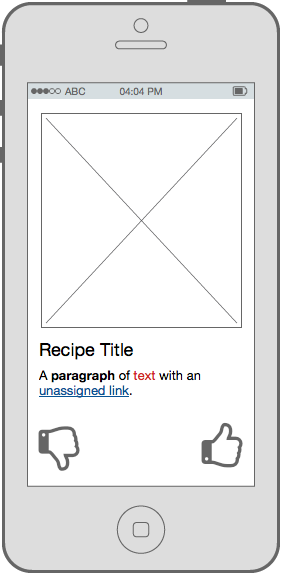

Moving Towards an MVP (10/6/16)
This week we made some preliminary decisions regarding the building blocks we wanted to use, as well as began to think about moving towards an MVP. The APIs we had been thinking about (such as Wit.ai and BigOven) seemed to not fit our needs as well as we initially hoped, so we made the switch to Api.ai and Yummly. However, these API decisions were moved to the backburner as we began to think more about what was strictly necessary for an MVP. We decided on what features were truly core to SueChef and began implementing only those. The foundational pieces we decided on are: recipe overview, recipe step-by-step view, and text-to-speech during the step-by-step view. This means we cut (for now) features like speech recognition, recipe finding, and social interactions.
Once these decisions were made, we began work implementing these core features. We decided to use dummy data for a recipe instead of a real recipe for now, so that we did not have to figure out both an API and how to manage the data from it at the same time. This piece by piece approach is much more practical and disciplined than attempting to build all parts of a feature simultaneously.
We have made decent progress towards our MVP already and will continue towards that goal for next week.
Beginning the Development Phase (9/29/16)
This week we began the early stages of development. Progress is slow as we continue to familiarize ourselves with Android development, and more time is spent 'experimenting' than actually putting together finalized code. This is of course a necessary phase in the development cycle, but it can feel arduous at times.
Next week we will continue exploring Android development, and progress towards a bare-bones skeleton for our app.
Further Thoughts on the Tech Behind SueChef (9/23/16)
The team is still studying up on Android development. While we are still learning the technicals, we've done a lot of brainstorming on the technologies we can incorporate into the product.
As discussed in our previous blog entry, CMUSphinx will be a necessity for keyword spotting. Without it, users will have to press a button to turn on their microphones, essentially ruining the purpose of SueChef.
Unfortunately, we cannot use CMUSphinx for its speech recognition and speech parsing abilities as we'd have to set up our own language models and dictionaries. As an alternative, we decided to incorporate Wit.ai. It has both speech recognition and speech parsing through a REST API. As Venturebeat says, "thanks to companies like Wit.ai, even kids at hackathons are showing off weekend projects that are voice-controlled." This should speed up our development.
If you took a look at our mockups, image display, especially in grid layouts, will be integral to the design of our app. We are looking to incorporate Picasso, an Android library for image downloading and caching. It will make user experience a lot more responsive and take care of a lot of the headaches that come from layouts.
We're looking to start development in the next week.
SueChef App Proposal (9/16/16)
The Goal of SueChef
Sue Chef is your assistant in the kitchen. She will help you while you cook by reading the recipe to you and responding to your voice.
Ask Sue "How much oregano should I use?" or "What's the next step?"
Target demographic
Anyone who cooks at home or is a cooking enthusiast would use this app.
Wireframe and mockup ideas
Recipe Detail

Guided Cooking

Tinder Search

Pinterest Search

Platform Architecture
- Node.js server
- CMU Sphinx for speech recognition
- Big Oven API ⋅⋅* (350,000+ recipes)
Core functionalities
- Allow user to interact with recipes
- Sue responds to basic voice commands
- "Sue, next step."
- "Sue, repeat that step."
- Sue reads the recipes aloud
- Search for recipes
Future plans and extended functionality
- Responds to more advanced commands like "What temperature should I preheat the oven to?"
- Tinder-style UI for finding new recipes
- Pinterest-style following other users/chefs
- Ability to comment and rate recipes
- Add recipes from various sites (Pinterest, NYTCooking, Food Network, etc)
- Take a photo of a recipe and allow Sue to read it
- Search recipes by nutritional information
Mobile App Features
- Speakers
- Internet
- Mic
- Camera
Obstacles and Limitations
- Issues with voice recognition
- Parsing of recipes from non-API sources
- Difficulty building social aspect of the app
Market/Advertising Strategy
- Have YouTube cooks use and mention the app in videos
- Advertise on cooking and recipe sites
- Product Hunt
Created by Alex Ravan, Chase Crumbaugh, and Vincent Tran